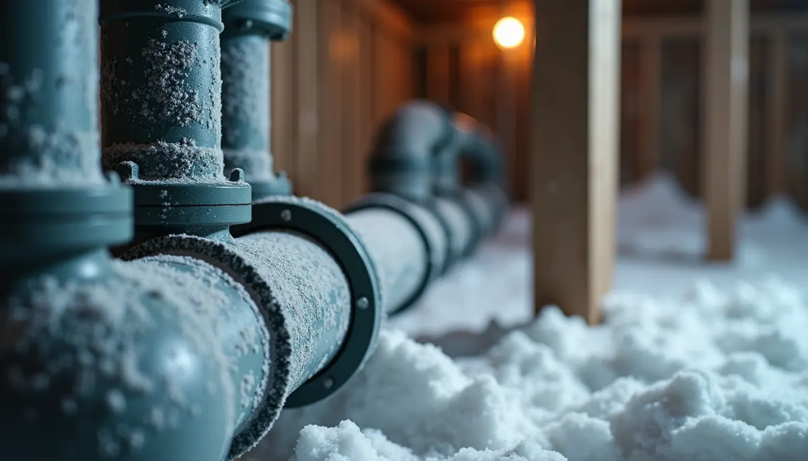
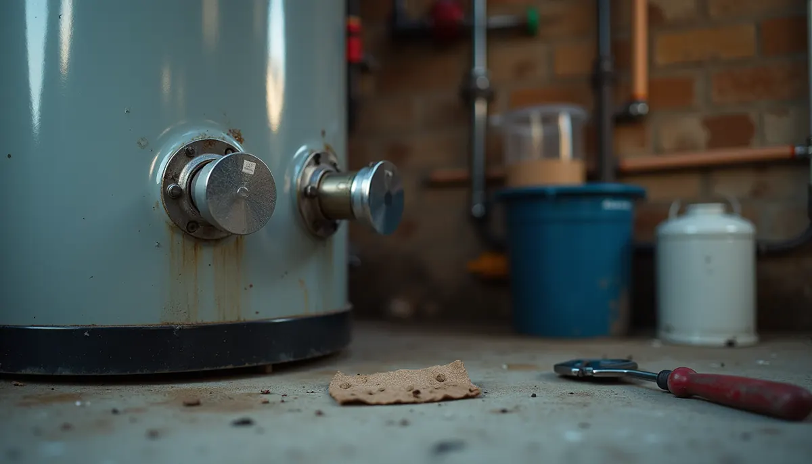
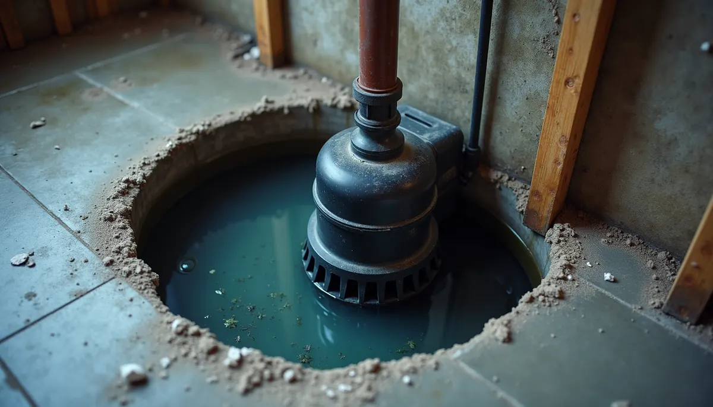

As autumn descends with its crisp air and falling leaves, it's easy to get caught up in the excitement of the season—pumpkin spice lattes, cozy sweaters, and holiday plans. However, one crucial task should take precedence on your to-do list: preparing your home's plumbing for winter. A burst pipe or a malfunctioning water heater during a freezing night can lead to expensive repairs. Scheduling a professional plumbing inspection before winter arrives can save you both time and money.
Why is a Pre-Winter Plumbing Inspection So Important?
The harsh winter weather can wreak havoc on your plumbing. When temperatures drop, unprotected pipes can freeze and burst, potentially causing thousands of dollars in water damages. According to the Insurance Institute for Business & Home Safety, around 250,000 homes in the U.S. experience water damage each winter, often due to frozen pipes. A professional inspection allows you to address problems early, ensuring your plumbing system is ready for the cold ahead.
Catch Issues Before They Become Disasters
A thorough pre-winter inspection will help identify common problems that can lead to significant damage.
Exposed Pipes
During the inspection, professionals will look for any exposed pipes in areas like garages, crawl spaces, or attics. For instance, insulating these pipes can reduce the risk of freezing—a simple act that could save you between $100 to $300 in repair costs from a burst pipe.
Hose Bibs
Your outdoor spigots are also a point of concern. Properly winterizing them is key. Homeowners often overlook this step, leading to costly repairs when spring arrives. This small preventive measure can save you from having to replace broken pipes that can cost anywhere from $500 to $1,500.
Water Heater Efficiency
Winter demands more from your water heater. During the inspection, professionals will check for sediment buildup and overall efficiency. Studies show that a well-maintained water heater can operate up to 25% more efficiently, which is crucial when you're relying on hot water for bathing and cooking during the cold months.
Sump Pump Function
Having a functional sump pump during winter is critical. Professionals will ensure that your sump pump is in good working order, capable of handling potential winter rains and melting snow. A failed sump pump can result in basement flooding and repair costs that can exceed $2,000.
Leaky Pipes
Even minor leaks can escalate in freezing temperatures, causing extensive damage. During the inspection, professionals will identify and repair these leaks before they become a major problem, potentially saving you thousands in water damage.
The Angle Stop Plumbing Difference
At Angle Stop Plumbing, our approach goes beyond just finding problems. Our experienced technicians are trained to notice issues that others might miss. After the inspection, you'll receive a detailed report outlining our findings along with actionable recommendations. Whether it's a minor fix or a more significant repair, we are here to help you navigate winter challenges.
Preparing Your Home for Winter
In addition to a plumbing inspection, consider these practical steps to keep your plumbing in top condition for winter:
Insulate Your Pipes
Insulation is crucial to preventing pipe freezes. Consider using foam pipe insulation or heat tape, especially for pipes located in unheated areas. This small investment can save you from the headache of emergency repairs.
Disconnect Hoses
Before the frost hits, disconnect and drain garden hoses. Store them indoors to avoid damage caused by freezing temperatures. This simple action can prevent costly repairs later on.
Check Your Thermostat
Keep your thermostat set to a constant temperature, even if you're away. This helps maintain warmth in areas where pipes are located, reducing the risk of freezing.
Know Your Main Water Shut-Off Valve
In case of an emergency, knowing the location of your main water shut-off valve is essential. Make sure everyone in your home knows how to turn it off quickly to minimize damage if a leak occurs.
It’s Time to Take Action
With winter right around the corner, preparing your plumbing system for the chill is crucial. A pre-season inspection can help you identify and fix potential issues before they turn into costly emergencies. By addressing common winter plumbing problems, you ensure peace of mind for the colder months ahead.
Don’t delay—schedule your plumbing inspection today and make sure your home is ready for whatever winter brings. A little effort now can prevent significant problems later, protecting your home and your wellbeing during the winter season.


